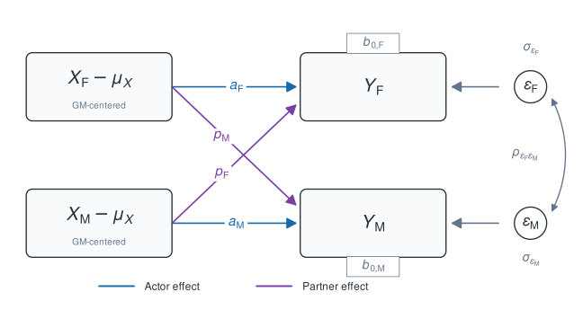
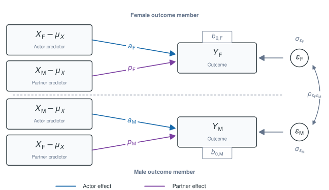
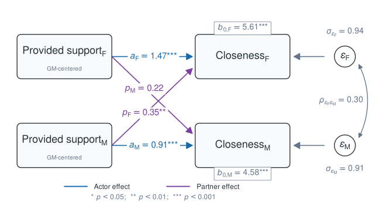
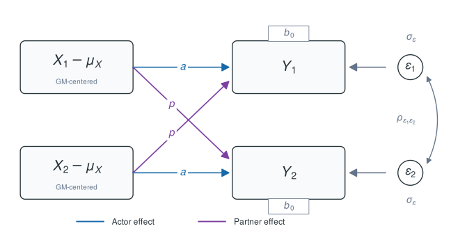
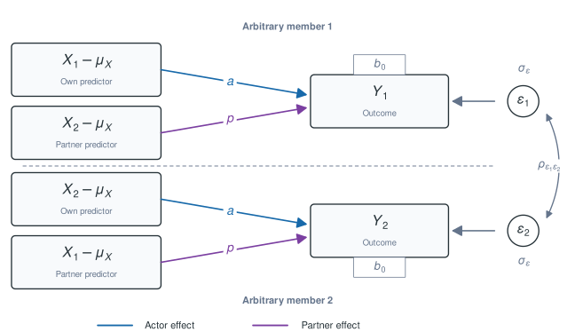
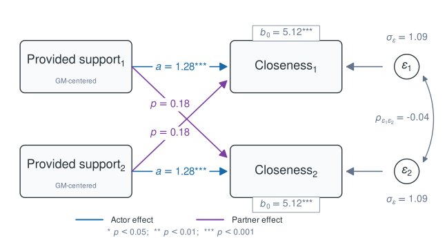

library(dyadMLM)
has_glmmTMB <- requireNamespace("glmmTMB", quietly = TRUE)
apim_distinguishable_fitted_alt <-
"Fitted distinguishable APIM diagram unavailable."
apim_exchangeable_fitted_alt <-
"Fitted exchangeable APIM diagram unavailable."This vignette focuses on Gaussian cross-sectional and intensive longitudinal Actor-Partner Interdependence models for distinguishable and exchangeable dyads. The intensive longitudinal examples cover concurrent associations and a simple dynamic model of stability and partner influence.
For the broader package workflow and an overview of the available model-specific vignettes, including the Dyad-Individual Model and Dyadic Score Model, see the online package overview.
A vignette for non-Gaussian generalized models is planned.
Cross-sectional APIMs
The distinguishable APIM
A conceptual example for distinguishable female-male dyads:

Conceptual cross-sectional APIM for distinguishable female-male dyads. Intercepts , actor effects , and partner effects can differ by the role of the outcome member (F and M), and the two outcome residuals covary within dyads.
For univariate MLM software like glmmTMB, this model is
fitted in long format with one outcome row per member, which can be
visualized as:

Individual-level representation of the distinguishable cross-sectional APIM used for the long-format multilevel model. For the female outcome, the female predictor is the actor predictor and the male predictor is the partner predictor. These roles reverse for the male outcome. Intercepts, actor coefficients, and partner coefficients may differ by outcome role, and the two member residuals may have different variances and covary.
Residual random-effects structure
For a distinguishable female-male dyad, the two members can have different residual variances. The within-dyad residual covariance block (shared across dyads) is:
And the full residual covariance matrix for all dyads (first three shown) is then block-diagonal:
This structure is estimated with an unstructured random-effects block
such as
us(0 + .dy_is_female_x_male_female + .dy_is_female_x_male_male | coupleID)
and dispformula = ~ 0.
Fitting the distinguishable APIM with glmmTMB
We first prepare the example data with
dyadMLM::prepare_dyad_data():
apim_distinguishable_data <- dyadMLM::prepare_dyad_data(
data = dyads_cross,
dyad = coupleID,
member = personID,
role = gender,
predictors = provided_support,
model_types = "apim",
# All three observed compositions in `dyads_cross` are detected and retained by
# default. This example focuses on `female-male` dyads, so we restrict the
# analysis here.
keep_compositions = "female-male"
)
print(apim_distinguishable_data, n=4)
#> # dyadMLM data
#> # Rows: 240 | Dyads: 120 | Intensive longitudinal: no
#> # Structure: dyad = coupleID, member = personID, role = gender
#> #
#> # Dyad compositions:
#> # female_x_male distinguishable 120 dyads
#> #
#> # Added columns:
#> # .dy_composition inferred dyad composition
#> # .dy_composition_role composition-specific member role
#> # .dy_is_{comp-role} composition-role indicator columns
#> # .dy_{pred}_actor APIM actor predictor: actor's original predictor
#> # values
#> # .dy_{pred}_partner APIM partner predictor: partner's original predictor
#> # values
#> #
#> # A tibble: 240 × 12
#> personID coupleID gender dyad_composition closeness provided_support
#> <int> <int> <fct> <fct> <dbl> <dbl>
#> 1 1 1 female female_x_male 4.77 4.49
#> 2 2 1 male female_x_male 4.46 4.76
#> 3 3 2 female female_x_male 6.44 4.09
#> 4 4 2 male female_x_male 5.99 6.20
#> # ℹ 236 more rows
#> # ℹ 6 more variables: .dy_composition <fct>, .dy_composition_role <fct>,
#> # .dy_is_female_x_male_female <dbl>, .dy_is_female_x_male_male <dbl>,
#> # .dy_provided_support_actor <dbl>, .dy_provided_support_partner <dbl>The generated .dy_* columns can be used directly in the
model formula. Here is a simple example:
apim_distinguishable_model <- glmmTMB::glmmTMB(
closeness ~
# Gender-specific intercepts
0 +
.dy_is_female_x_male_female +
.dy_is_female_x_male_male +
# Gender-specific actor effects
.dy_is_female_x_male_female:.dy_provided_support_actor +
.dy_is_female_x_male_male:.dy_provided_support_actor +
# Gender-specific partner effects
.dy_is_female_x_male_female:.dy_provided_support_partner +
.dy_is_female_x_male_male:.dy_provided_support_partner +
# Dyad-level unstructured random effects represent the two partner
# residual variances and their covariance when dispformula = ~ 0.
# This is glmmTMB-specific syntax! `brms` uses different syntax.
us(0 +
.dy_is_female_x_male_female +
.dy_is_female_x_male_male
| coupleID)
, dispformula = ~ 0
, family = gaussian()
, data = apim_distinguishable_data
)
summary(apim_distinguishable_model)
#> Family: gaussian ( identity )
#> Formula:
#> closeness ~ 0 + .dy_is_female_x_male_female + .dy_is_female_x_male_male +
#> .dy_is_female_x_male_female:.dy_provided_support_actor +
#> .dy_is_female_x_male_male:.dy_provided_support_actor + .dy_is_female_x_male_female:.dy_provided_support_partner +
#> .dy_is_female_x_male_male:.dy_provided_support_partner +
#> us(0 + .dy_is_female_x_male_female + .dy_is_female_x_male_male |
#> coupleID)
#> Dispersion: ~0
#> Data: apim_distinguishable_data
#>
#> AIC BIC logLik -2*log(L) df.resid
#> 615.1 646.5 -298.6 597.1 231
#>
#> Random effects:
#>
#> Conditional model:
#> Groups Name Variance Std.Dev. Corr
#> coupleID .dy_is_female_x_male_female 0.7655 0.8749
#> .dy_is_female_x_male_male 0.7401 0.8603 0.35
#> Number of obs: 240, groups: coupleID, 120
#>
#> Conditional model:
#> Estimate Std. Error
#> .dy_is_female_x_male_female -3.3781 0.5638
#> .dy_is_female_x_male_male -0.8610 0.5543
#> .dy_is_female_x_male_female:.dy_provided_support_actor 1.4757 0.1142
#> .dy_is_female_x_male_male:.dy_provided_support_actor 0.9139 0.1015
#> .dy_is_female_x_male_female:.dy_provided_support_partner 0.3499 0.1032
#> .dy_is_female_x_male_male:.dy_provided_support_partner 0.1924 0.1123
#> z value Pr(>|z|)
#> .dy_is_female_x_male_female -5.992 2.07e-09 ***
#> .dy_is_female_x_male_male -1.553 0.1204
#> .dy_is_female_x_male_female:.dy_provided_support_actor 12.927 < 2e-16 ***
#> .dy_is_female_x_male_male:.dy_provided_support_actor 9.003 < 2e-16 ***
#> .dy_is_female_x_male_female:.dy_provided_support_partner 3.389 0.0007 ***
#> .dy_is_female_x_male_male:.dy_provided_support_partner 1.714 0.0865 .
#> ---
#> Signif. codes: 0 '***' 0.001 '**' 0.01 '*' 0.05 '.' 0.1 ' ' 1The estimated coefficients map as follows:

Fitted cross-sectional distinguishable APIM for the example data. Fixed effects, residual standard deviations, and the residual correlation are extracted from the fitted model.
The exchangeable APIM
Conceptually, the exchangeable APIM constrains several of the effects to be equal:

Conceptual cross-sectional APIM for exchangeable dyads. The two members share one intercept, one actor effect, and one partner effect. Their outcome residuals have equal variances, yet still covary within dyads.
Because the member labels are arbitrary, swapping members 1 and 2 does not change the model.
To estimate this model in a univariate MLM framework, we can draw a conceptual diagram as such:

Individual-level representation of the exchangeable cross-sectional APIM used for the long-format multilevel model. Both members share the same intercept. Each member’s own predictor has the shared actor effect, and the other member’s predictor has the shared partner effect. The two residual variances are equal and the residuals may covary.
Modeling the residual random-effects structure
For a simple random-intercept structure, equal member variances and their covariance can be specified directly. The specification becomes more difficult when the same exchangeability constraints must cover several random slopes. A single homogeneous structure would impose one variance across intercepts and slopes, whereas separate structures would omit their correlations.
The shared/difference representation works for residuals and other
random-effect terms, including random slopes. Following del Rosario and West (2025),
dyadMLM::prepare_dyad_data() generates an arbitrary
member-difference column, named .dy_member_contrast_*. This
contrast is +1 for one member and -1 for the
other. The exchangeable residual structure is represented by two
separate random-effects terms: a shared dyad random intercept and a
random coefficient for this difference column. Additional random slopes
can be included in both blocks without changing this logic.
We will now fit a simple exchangeable APIM and then use the
dyadMLM::recover_exchangeable_covariance() function that
back-transforms the structure to the often more interpretable
member-level residual covariance matrix.
Fitting the exchangeable APIM with glmmTMB
We use the same dataset as before, but do not distinguish males and females. We can test distinguishability later by comparing this model with the prior model.
We use set_exchangeable_compositions for the
exchangeability constraints. Another option would be to omit roles.
apim_exchangeable_data <- dyadMLM::prepare_dyad_data(
dyads_cross,
dyad = coupleID,
member = personID,
role = gender,
predictors = provided_support,
keep_compositions = "female-male",
set_exchangeable_compositions = "female-male",
seed = 123
)
print(apim_exchangeable_data, n = 4)
#> # dyadMLM data
#> # Rows: 240 | Dyads: 120 | Intensive longitudinal: no
#> # Structure: dyad = coupleID, member = personID, role = gender
#> #
#> # Dyad compositions:
#> # female_x_male exchangeable (set by user) 120 dyads
#> #
#> # Added columns:
#> # .dy_composition inferred dyad composition
#> # .dy_composition_role composition-specific member role
#> # .dy_is_{comp-role} composition-role indicator columns
#> # .dy_member_contrast_{comp}_arbitrary composition-specific member contrasts
#> # with arbitrary direction; 0 for
#> # distinguishable dyads or other
#> # exchangeable compositions
#> # .dy_{pred}_actor APIM actor predictor: actor's
#> # original predictor values
#> # .dy_{pred}_partner APIM partner predictor: partner's
#> # original predictor values
#> #
#> # A tibble: 240 × 12
#> personID coupleID gender dyad_composition closeness provided_support
#> <int> <int> <fct> <fct> <dbl> <dbl>
#> 1 1 1 female female_x_male 4.77 4.49
#> 2 2 1 male female_x_male 4.46 4.76
#> 3 3 2 female female_x_male 6.44 4.09
#> 4 4 2 male female_x_male 5.99 6.20
#> # ℹ 236 more rows
#> # ℹ 6 more variables: .dy_composition <fct>, .dy_composition_role <fct>,
#> # .dy_is_female_x_male <dbl>,
#> # .dy_member_contrast_female_x_male_arbitrary <dbl>,
#> # .dy_provided_support_actor <dbl>, .dy_provided_support_partner <dbl>We then use the columns to fit the model as follows:
apim_exchangeable_model <- glmmTMB::glmmTMB(
closeness ~
# Pooled single intercept
1 +
# Pooled single actor and partner effects
.dy_provided_support_actor +
.dy_provided_support_partner +
# Residual variance covariance matrix via the shared/difference
# specification in two uncorrelated blocks
us(1 | coupleID) +
us(0 + .dy_member_contrast_female_x_male_arbitrary | coupleID),
dispformula = ~ 0,
family = gaussian(),
data = apim_exchangeable_data
)
summary(apim_exchangeable_model)
#> Family: gaussian ( identity )
#> Formula:
#> closeness ~ 1 + .dy_provided_support_actor + .dy_provided_support_partner +
#> us(1 | coupleID) + us(0 + .dy_member_contrast_female_x_male_arbitrary |
#> coupleID)
#> Dispersion: ~0
#> Data: apim_exchangeable_data
#>
#> AIC BIC logLik -2*log(L) df.resid
#> 708.2 725.6 -349.1 698.2 235
#>
#> Random effects:
#>
#> Conditional model:
#> Groups Name Variance Std.Dev.
#> coupleID (Intercept) 0.5160 0.7183
#> coupleID.1 .dy_member_contrast_female_x_male_arbitrary 0.5589 0.7476
#> Number of obs: 240, groups: coupleID, 120
#>
#> Conditional model:
#> Estimate Std. Error z value Pr(>|z|)
#> (Intercept) -2.03068 0.45797 -4.434 9.25e-06 ***
#> .dy_provided_support_actor 1.28763 0.08962 14.368 < 2e-16 ***
#> .dy_provided_support_partner 0.16444 0.08962 1.835 0.0665 .
#> ---
#> Signif. codes: 0 '***' 0.001 '**' 0.01 '*' 0.05 '.' 0.1 ' ' 1We use the dyadMLM::recover_exchangeable_covariance() to
recover the interpretable variance-covariance matrix:
backtransformed <- dyadMLM::recover_exchangeable_covariance(apim_exchangeable_model)
# residual variance-covariance and SD-correlation representations
print(backtransformed)
#> Exchangeable residual covariance
#>
#> Pair `pair_1`
#> Shared: us(1 | coupleID)
#> Difference: us(0 + .dy_member_contrast_female_x_male_arbitrary | coupleID)
#>
#> Variance-covariance:
#> 1 2
#> 1 member1: (Intercept) 1.075 -0.043
#> 2 member2: (Intercept) -0.043 1.075
#>
#> Standard deviations and correlations:
#> 1 2
#> 1 member1: (Intercept) 1.037 -0.040
#> 2 member2: (Intercept) -0.040 1.037The back-transformation follows directly from the shared and member-difference random effects. If is the shared effect for dyad and its member-difference effect, the two member effects are
Because the two fitted blocks are independent,
The output can now be mapped as follows:

Fitted cross-sectional exchangeable APIM for the example data. The common member residual standard deviation and residual correlation are back-transformed from the fitted mean and difference components.
Testing distinguishability
Distinguishability can be evaluated by comparing a full model in which the two roles may differ with a restricted exchangeable model. This comparison tests the imposed equality constraints jointly. Here, they concern the fixed intercepts, actor effects, partner effects, and residual variances.
The two parameterizations require different generated columns, but both models above use the same original observations.
dyadMLM::compare_nested_glmmTMB_models()
verifies that both models use equivalent original observations before
performing the likelihood-ratio test:
dyadMLM::compare_nested_glmmTMB_models(
apim_exchangeable_model,
apim_distinguishable_model
)
#> Likelihood-ratio test for nested models fitted to equivalent data
#> Assumes mathematical nesting and an appropriate chi-squared reference distribution.
#>
#> Df AIC BIC logLik deviance Chisq Chi Df
#> apim_exchangeable_model 5 708.23 725.64 -349.12 698.23
#> apim_distinguishable_model 9 615.13 646.46 -298.57 597.13 101.1 4
#> Pr(>Chisq)
#> apim_exchangeable_model
#> apim_distinguishable_model < 2.2e-16 ***
#> ---
#> Signif. codes: 0 '***' 0.001 '**' 0.01 '*' 0.05 '.' 0.1 ' ' 1
#>
#> Conclusion (5% level): The likelihood-ratio test provides evidence that `apim_distinguishable_model` fits better than `apim_exchangeable_model` (p < 0.001).The test provides evidence against all restrictions jointly, but it does not show which parameter differs. The helper also cannot determine whether the models are mathematically nested; that remains a modeling requirement. The usual chi-squared reference distribution may be unreliable when a tested variance parameter lies on its boundary.
Intensive longitudinal APIMs
For longitudinal APIMs, time-varying predictors are decomposed into
within-person and between-person components before actor and partner
variables are constructed (Bolger and Laurenceau
2013; Gistelinck and Loeys 2020). The default "auto"
selects "2l" when both time and
predictors are supplied. The within-person
(cwp) component captures occasion-specific deviations from
each member’s observed mean, whereas the between-person
(cbp) component captures each member’s observed mean
relative to the sample grand mean.
Note that observed person means used to construct the between-person
(cbp) predictors can be unreliable when each member
contributes few occasions, which can bias
between-person estimates (Gottfredson
2019).
Concurrent ILD Gaussian APIM for distinguishable dyads
The decomposition above can be combined with role-specific effects. We first retain the female-male distinction when preparing the data:
ild_distinguishable_data <- dyadMLM::prepare_dyad_data(
dyads_ild,
dyad = coupleID,
member = personID,
role = gender,
time = diaryday,
predictors = provided_support,
model_types = "apim",
keep_compositions = "female-male"
) |>
dplyr::mutate(
# we grand-mean center in this example to help convergence and
# interpretation
diaryday_gmc = diaryday - mean(diaryday)
)The following model allows the intercepts, time trends, and within-
and between-person actor and partner effects to differ between female
and male members. Centering diaryday makes the
role-specific intercepts refer to the average study day:
ild_distinguishable_model <- glmmTMB::glmmTMB(
closeness ~
0 +
# Role-specific intercepts
.dy_is_female_x_male_female +
.dy_is_female_x_male_male +
# Role-specific time trends
.dy_is_female_x_male_female:diaryday_gmc +
.dy_is_female_x_male_male:diaryday_gmc +
# Role-specific within-person actor effects
.dy_is_female_x_male_female:.dy_provided_support_cwp_actor +
.dy_is_female_x_male_male:.dy_provided_support_cwp_actor +
# Role-specific within-person partner effects
.dy_is_female_x_male_female:.dy_provided_support_cwp_partner +
.dy_is_female_x_male_male:.dy_provided_support_cwp_partner +
# Role-specific between-person actor effects
.dy_is_female_x_male_female:.dy_provided_support_cbp_actor +
.dy_is_female_x_male_male:.dy_provided_support_cbp_actor +
# Role-specific between-person partner effects
.dy_is_female_x_male_female:.dy_provided_support_cbp_partner +
.dy_is_female_x_male_male:.dy_provided_support_cbp_partner +
# Stable dyad-level covariance
us(0 + .dy_is_female_x_male_female + .dy_is_female_x_male_male | coupleID) +
# Same-occasion covariance
us(0 + .dy_is_female_x_male_female + .dy_is_female_x_male_male |
coupleID:diaryday),
dispformula = ~ 0,
family = gaussian(),
data = ild_distinguishable_data
)
#> Warning in finalizeTMB(TMBStruc, obj, fit, h, data.tmb.old): Model convergence
#> problem; false convergence (8). See vignette('troubleshooting'),
#> help('diagnose')Random slopes
For example, role-specific within-person actor random slopes can be added by replacing the stable dyad-level block above with:
us(
0 +
.dy_is_female_x_male_female +
.dy_is_female_x_male_male +
.dy_is_female_x_male_female:.dy_provided_support_cwp_actor +
.dy_is_female_x_male_male:.dy_provided_support_cwp_actor
| coupleID
)This block estimates the covariance among the two role-specific random intercepts and actor slopes.
Concurrent ILD Gaussian APIM for exchangeable dyads
In longitudinal Gaussian exchangeable APIMs, the sum-and-difference parametrization from del Rosario and West (2025) can be extended to the dyad-occasion level to represent same-occasion residual dependence.
We first prepare within-person (cwp) and between-person
(cbp) actor and partner predictors. We retain the
female-female dyads as one substantively exchangeable composition:
ild_apim_data <- dyadMLM::prepare_dyad_data(
dyads_ild,
dyad = coupleID,
member = personID,
role = gender,
time = diaryday,
predictors = provided_support,
model_types = "apim",
keep_compositions = "female-female",
seed = 123
)
print(ild_apim_data, n = 4)
#> # dyadMLM data
#> # Rows: 3360 | Dyads: 120 | Intensive longitudinal: yes
#> # Structure: dyad = coupleID, member = personID, role = gender, time = diaryday
#> #
#> # Dyad compositions:
#> # female_x_female exchangeable 120 dyads
#> #
#> # Added columns:
#> # .dy_composition inferred dyad composition
#> # .dy_composition_role composition-specific member role
#> # .dy_is_{comp-role} composition-role indicator columns
#> # .dy_member_contrast_{comp}_arbitrary composition-specific member contrasts
#> # with arbitrary direction; 0 for
#> # distinguishable dyads or other
#> # exchangeable compositions
#> # .dy_{pred}_cwp within-person predictor: momentary
#> # deviations from each person's usual
#> # level
#> # .dy_{pred}_cbp between-person predictor: stable
#> # differences from the average person's
#> # usual level
#> # .dy_{pred}_actor APIM actor predictor: actor's
#> # original predictor values
#> # .dy_{pred}_partner APIM partner predictor: partner's
#> # original predictor values
#> # .dy_{pred}_cwp_actor APIM within-person actor predictor:
#> # actor's momentary deviations from
#> # their usual level
#> # .dy_{pred}_cwp_partner APIM within-person partner predictor:
#> # partner's momentary deviations from
#> # their usual level
#> # .dy_{pred}_cbp_actor APIM between-person actor predictor:
#> # actor's stable difference from the
#> # average person's usual level
#> # .dy_{pred}_cbp_partner APIM between-person partner
#> # predictor: partner's stable
#> # difference from the average person's
#> # usual level
#> #
#> # A tibble: 3,360 × 19
#> personID coupleID diaryday gender dyad_composition closeness provided_support
#> <int> <int> <int> <fct> <fct> <dbl> <dbl>
#> 1 241 121 0 female female_x_female 6.59 6.18
#> 2 242 121 0 female female_x_female 5.73 5.70
#> 3 241 121 1 female female_x_female 8.70 4.57
#> 4 242 121 1 female female_x_female 5.61 5.30
#> # ℹ 3,356 more rows
#> # ℹ 12 more variables: .dy_composition <fct>, .dy_composition_role <fct>,
#> # .dy_is_female_x_female <dbl>,
#> # .dy_member_contrast_female_x_female_arbitrary <dbl>,
#> # .dy_provided_support_cwp <dbl>, .dy_provided_support_cbp <dbl>,
#> # .dy_provided_support_actor <dbl>, .dy_provided_support_partner <dbl>,
#> # .dy_provided_support_cwp_actor <dbl>, …The example below estimates same-day associations between support and
closeness and includes diaryday to adjust for a linear time
trend. We also include an actor random slope in both stable dyad-level
blocks so that we can demonstrate the random-slope back-transformation
below.
# Profile the fixed effects and use BFGS for stable cross-platform optimization.
ild_apim_control <- glmmTMB::glmmTMBControl(
profile = TRUE,
optimizer = stats::optim,
optArgs = list(method = "BFGS")
)
ild_apim_model <- glmmTMB::glmmTMB(
closeness ~
1 +
diaryday +
# Within-person actor and partner effects
.dy_provided_support_cwp_actor +
.dy_provided_support_cwp_partner +
# Between-person actor and partner effects
.dy_provided_support_cbp_actor +
.dy_provided_support_cbp_partner +
# Stable exchangeable dyad-level covariance with actor random slopes
us(1 + .dy_provided_support_cwp_actor | coupleID) + # shared intercept and slope
us(0 + .dy_member_contrast_female_x_female_arbitrary + # difference intercept
.dy_member_contrast_female_x_female_arbitrary:
.dy_provided_support_cwp_actor # difference slope
| coupleID) +
# Same-occasion exchangeable covariance
us(1 | coupleID:diaryday) +
us(0 + .dy_member_contrast_female_x_female_arbitrary | coupleID:diaryday)
, dispformula = ~ 0
, family = gaussian()
, data = ild_apim_data
, control = ild_apim_control
)
summary(ild_apim_model)
#> Family: gaussian ( identity )
#> Formula:
#> closeness ~ 1 + diaryday + .dy_provided_support_cwp_actor + .dy_provided_support_cwp_partner +
#> .dy_provided_support_cbp_actor + .dy_provided_support_cbp_partner +
#> us(1 + .dy_provided_support_cwp_actor | coupleID) + us(0 +
#> .dy_member_contrast_female_x_female_arbitrary + .dy_member_contrast_female_x_female_arbitrary:.dy_provided_support_cwp_actor |
#> coupleID) + us(1 | coupleID:diaryday) + us(0 + .dy_member_contrast_female_x_female_arbitrary |
#> coupleID:diaryday)
#> Dispersion: ~0
#> Data: ild_apim_data
#>
#> AIC BIC logLik -2*log(L) df.resid
#> 8303.5 8389.2 -4137.7 8275.5 3346
#>
#> Random effects:
#>
#> Conditional model:
#> Groups
#> coupleID
#>
#> coupleID.1
#>
#> coupleID.diaryday
#> coupleID.diaryday.1
#> Name
#> (Intercept)
#> .dy_provided_support_cwp_actor
#> .dy_member_contrast_female_x_female_arbitrary
#> .dy_member_contrast_female_x_female_arbitrary:.dy_provided_support_cwp_actor
#> (Intercept)
#> .dy_member_contrast_female_x_female_arbitrary
#> Variance Std.Dev. Corr
#> 0.53933 0.7344
#> 0.08265 0.2875 0.31
#> 0.25635 0.5063
#> 0.08180 0.2860 -0.19
#> 0.36229 0.6019
#> 0.18043 0.4248
#> Number of obs: 3360, groups: coupleID, 120; coupleID:diaryday, 1680
#>
#> Conditional model:
#> Estimate Std. Error z value Pr(>|z|)
#> (Intercept) 5.894110 0.072751 81.02 < 2e-16 ***
#> diaryday 0.007846 0.003713 2.11 0.0346 *
#> .dy_provided_support_cwp_actor 0.245909 0.032678 7.53 5.26e-14 ***
#> .dy_provided_support_cwp_partner 0.247470 0.018980 13.04 < 2e-16 ***
#> .dy_provided_support_cbp_actor 1.215919 0.070694 17.20 < 2e-16 ***
#> .dy_provided_support_cbp_partner 0.308590 0.070711 4.36 1.28e-05 ***
#> ---
#> Signif. codes: 0 '***' 0.001 '**' 0.01 '*' 0.05 '.' 0.1 ' ' 1We can now recover the member-level covariance matrices for both the stable dyad effects and the same-occasion residual dependence. The two matched block pairs are returned separately:
recovered_covariance <- dyadMLM::recover_exchangeable_covariance(ild_apim_model)
print(recovered_covariance)
#> Exchangeable residual covariances (2 block pairs)
#>
#> Pair `pair_1`
#> Shared: us(1 + .dy_provided_support_cwp_actor | coupleID)
#> Difference: us(0 + .dy_member_contrast_female_x_female_arbitrary + .dy_member_contrast_female_x_female_arbitrary:.dy_provided_support_cwp_actor | coupleID)
#>
#> Variance-covariance:
#> 1 2 3 4
#> 1 member1: (Intercept) 0.796 0.038 0.283 0.093
#> 2 member1: .dy_provided_support_cwp_actor 0.038 0.164 0.093 0.001
#> 3 member2: (Intercept) 0.283 0.093 0.796 0.038
#> 4 member2: .dy_provided_support_cwp_actor 0.093 0.001 0.038 0.164
#>
#> Standard deviations and correlations:
#> 1 2 3 4
#> 1 member1: (Intercept) 0.892 0.104 0.356 0.257
#> 2 member1: .dy_provided_support_cwp_actor 0.104 0.406 0.257 0.005
#> 3 member2: (Intercept) 0.356 0.257 0.892 0.104
#> 4 member2: .dy_provided_support_cwp_actor 0.257 0.005 0.104 0.406
#>
#> Pair `pair_2`
#> Shared: us(1 | coupleID:diaryday)
#> Difference: us(0 + .dy_member_contrast_female_x_female_arbitrary | coupleID:diaryday)
#>
#> Variance-covariance:
#> 1 2
#> 1 member1: (Intercept) 0.543 0.182
#> 2 member2: (Intercept) 0.182 0.543
#>
#> Standard deviations and correlations:
#> 1 2
#> 1 member1: (Intercept) 0.737 0.335
#> 2 member2: (Intercept) 0.335 0.737The cwp terms estimate actor and partner associations
for occasion-specific deviations from each member’s usual support. The
cbp terms estimate actor and partner associations involving
members’ usual support levels. These are concurrent associations; they
do not by themselves represent temporal carryover.
Extension to exchangeable random slopes
The same shared/difference back-transformation described above applies separately to every random slope. It also applies to covariances among the random intercept, actor slope, and partner slope.
Testing random-effect constraints
The full model above estimates both a shared and a member-contrast actor random slope. We can first test a smaller model that omits only the actor random slope from the member-contrast block. The member-contrast random intercept and both same-occasion blocks remain in the model:
ild_apim_no_contrast_slope <- update(
ild_apim_model,
formula = . ~ . -
us(0 +
.dy_member_contrast_female_x_female_arbitrary +
.dy_member_contrast_female_x_female_arbitrary:
.dy_provided_support_cwp_actor
| coupleID) +
us(0 + .dy_member_contrast_female_x_female_arbitrary | coupleID)
)
dyadMLM::compare_nested_glmmTMB_models(
ild_apim_no_contrast_slope,
ild_apim_model
)
#> Likelihood-ratio test for nested models fitted to equivalent data
#> Assumes mathematical nesting and an appropriate chi-squared reference distribution.
#>
#> Df AIC BIC logLik deviance Chisq Chi Df
#> ild_apim_no_contrast_slope 12 8419.8 8493.2 -4197.9 8395.8
#> ild_apim_model 14 8303.5 8389.2 -4137.7 8275.5 120.33 2
#> Pr(>Chisq)
#> ild_apim_no_contrast_slope
#> ild_apim_model < 2.2e-16 ***
#> ---
#> Signif. codes: 0 '***' 0.001 '**' 0.01 '*' 0.05 '.' 0.1 ' ' 1
#>
#> Conclusion (5% level): The likelihood-ratio test provides evidence that `ild_apim_model` fits better than `ild_apim_no_contrast_slope` (p < 0.001).Without the member-contrast slope, the two members have identical actor random slopes at the stable dyad level. We tell the back-transformation which fitted blocks represent this constraint.
Since we omitted terms, automatic matching is no longer possible and
we need to tell dyadMLM::recover_exchangeable_covariance()
what blocks belong together.
no_contrast_slope_covariance <- dyadMLM::recover_exchangeable_covariance(
ild_apim_no_contrast_slope,
block_pairings = list(
dyad = list(
shared_block =
"us(1 + .dy_provided_support_cwp_actor | coupleID)",
difference_block =
"us(0 + .dy_member_contrast_female_x_female_arbitrary | coupleID)",
difference_indicator =
".dy_member_contrast_female_x_female_arbitrary"
)
)
)
print(no_contrast_slope_covariance, representation = "sdcor")
#> Exchangeable residual covariance
#>
#> Pair `dyad`
#> Shared: us(1 + .dy_provided_support_cwp_actor | coupleID)
#> Difference: us(0 + .dy_member_contrast_female_x_female_arbitrary | coupleID)
#>
#> Standard deviations and correlations:
#> 1 2 3 4
#> 1 member1: (Intercept) 0.890 0.259 0.357 0.259
#> 2 member1: .dy_provided_support_cwp_actor 0.259 0.291 0.259 1.000
#> 3 member2: (Intercept) 0.357 0.259 0.890 0.259
#> 4 member2: .dy_provided_support_cwp_actor 0.259 1.000 0.259 0.291We can impose the stronger constraint by omitting the full member-contrast block at the stable dyad level. The same-occasion member-contrast block again remains in the model:
ild_apim_no_contrast_block <- update(
ild_apim_model,
formula = . ~ . -
us(0 +
.dy_member_contrast_female_x_female_arbitrary +
.dy_member_contrast_female_x_female_arbitrary:
.dy_provided_support_cwp_actor
| coupleID)
)
dyadMLM::compare_nested_glmmTMB_models(
ild_apim_no_contrast_block,
ild_apim_model
)
#> Likelihood-ratio test for nested models fitted to equivalent data
#> Assumes mathematical nesting and an appropriate chi-squared reference distribution.
#>
#> Df AIC BIC logLik deviance Chisq Chi Df
#> ild_apim_no_contrast_block 11 9421.3 9488.6 -4699.6 9399.3
#> ild_apim_model 14 8303.5 8389.2 -4137.7 8275.5 1123.8 3
#> Pr(>Chisq)
#> ild_apim_no_contrast_block
#> ild_apim_model < 2.2e-16 ***
#> ---
#> Signif. codes: 0 '***' 0.001 '**' 0.01 '*' 0.05 '.' 0.1 ' ' 1
#>
#> Conclusion (5% level): The likelihood-ratio test provides evidence that `ild_apim_model` fits better than `ild_apim_no_contrast_block` (p < 0.001).Here, both members have identical random intercepts and actor random
slopes at the stable dyad level. Because the full member-contrast block
is absent, we specify it as NULL:
no_contrast_block_covariance <- dyadMLM::recover_exchangeable_covariance(
ild_apim_no_contrast_block,
block_pairings = list(
dyad = list(
shared_block =
"us(1 + .dy_provided_support_cwp_actor | coupleID)",
difference_block = NULL,
difference_indicator =
".dy_member_contrast_female_x_female_arbitrary"
)
)
)
print(no_contrast_block_covariance, representation = "sdcor")
#> Exchangeable residual covariance
#>
#> Pair `dyad`
#> Shared: us(1 + .dy_provided_support_cwp_actor | coupleID)
#> Difference: <omitted>
#>
#> Standard deviations and correlations:
#> 1 2 3 4
#> 1 member1: (Intercept) 0.733 0.344 1.000 0.344
#> 2 member1: .dy_provided_support_cwp_actor 0.344 0.272 0.344 1.000
#> 3 member2: (Intercept) 1.000 0.344 0.733 0.344
#> 4 member2: .dy_provided_support_cwp_actor 0.344 1.000 0.344 0.272These are constraints on the stable dyad-level random effects, not on the same-occasion residual structure. Because variance constraints lie on the boundary of the parameter space, the usual chi-squared reference distribution for the likelihood-ratio tests should be interpreted cautiously.
Current limitations of dyadic ILD designs in R
Concurrent dyadic ILD models can adjust for a time trend and account for stable dyadic dependence and same-occasion partner dependence. They do not model residual serial dependence, however, and therefore estimate concurrent associations under the assumption that residuals from different days are independent.
If the goal is to retain these concurrent APIM associations while
accounting for serial dependence, the closest extension is a dyadic
residual dynamic structural equation model (RDSEM). It keeps the
concurrent regression separate from a VAR model for its residuals (Asparouhov and Muthén 2020; McNeish and Hamaker
2020). This residual-VAR structure is not directly available
through the glmmTMB interface used here, and open-source
support for dyadic dynamic models remains very limited (del Rosario and West 2025). Within open-source
R, such a model generally requires custom TMB or Stan code.
Dynamic ILD APIM example
A practical alternative is a model with lagged outcomes, especially when carryover or temporal dynamics are part of the research question (Gistelinck and Loeys 2020). In such a model, the member’s own lagged outcome represents stability and the partner’s lagged outcome represents influence. All other APIM predictor effects then describe associations conditional on the members’ prior outcomes.
By adding the outcome to predictors and selecting it
with lag1_predictors,
dyadMLM::prepare_dyad_data() returns lag-1 raw and
within-person scores alongside the contemporaneous scores.
Between-person scores are not lagged because they describe stable
differences between members.
For this example, we obtain the lagged actor and partner outcome
columns through the lag1_predictors argument:
ild_apim_data_dynamic <- dyadMLM::prepare_dyad_data(
dyads_ild,
dyad = coupleID,
member = personID,
role = gender,
time = diaryday,
predictors = closeness,
lag1_predictors = closeness,
model_types = "apim",
keep_compositions = "female-female",
seed = 123
)This returns all necessary variables for either choice, including
lag-1 raw and within-person closeness scores. Lags are matched at
exactly diaryday - 1, so omitted diary days are not
bridged.
A simple fixed-slope dyadic stability and influence model (del Rosario and West 2025):
stability_influence <- glmmTMB::glmmTMB(
closeness ~ 1 +
# Stability (actor effect across time)
.dy_closeness_actor_lag1 +
# Influence (partner effect across time)
.dy_closeness_partner_lag1 +
# Linear time trend
diaryday +
# Stable exchangeable dyad-level covariance
us(1 | coupleID) +
us(0 + .dy_member_contrast_female_x_female_arbitrary | coupleID) +
# Same-day exchangeable dyad-level covariance
us(1 | coupleID:diaryday) +
us(0 + .dy_member_contrast_female_x_female_arbitrary | coupleID:diaryday)
, dispformula = ~ 0
, family = gaussian()
, data = ild_apim_data_dynamic
)
summary(stability_influence)
#> Family: gaussian ( identity )
#> Formula:
#> closeness ~ 1 + .dy_closeness_actor_lag1 + .dy_closeness_partner_lag1 +
#> diaryday + us(1 | coupleID) + us(0 + .dy_member_contrast_female_x_female_arbitrary |
#> coupleID) + us(1 | coupleID:diaryday) + us(0 + .dy_member_contrast_female_x_female_arbitrary |
#> coupleID:diaryday)
#> Dispersion: ~0
#> Data: ild_apim_data_dynamic
#>
#> AIC BIC logLik -2*log(L) df.resid
#> 8341.7 8390.1 -4162.9 8325.7 3112
#>
#> Random effects:
#>
#> Conditional model:
#> Groups Name Variance
#> coupleID (Intercept) 1.7348
#> coupleID.1 .dy_member_contrast_female_x_female_arbitrary 0.4077
#> coupleID.diaryday (Intercept) 0.4769
#> coupleID.diaryday.1 .dy_member_contrast_female_x_female_arbitrary 0.2161
#> Std.Dev.
#> 1.3171
#> 0.6385
#> 0.6906
#> 0.4649
#> Number of obs: 3120, groups: coupleID, 120; coupleID:diaryday, 1560
#>
#> Conditional model:
#> Estimate Std. Error z value Pr(>|z|)
#> (Intercept) 5.834951 0.206339 28.278 <2e-16 ***
#> .dy_closeness_actor_lag1 0.005985 0.019493 0.307 0.7588
#> .dy_closeness_partner_lag1 0.002167 0.019493 0.111 0.9115
#> diaryday 0.008910 0.004676 1.905 0.0567 .
#> ---
#> Signif. codes: 0 '***' 0.001 '**' 0.01 '*' 0.05 '.' 0.1 ' ' 1This model can be extended with contemporaneous actor and partner predictor associations and other lagged predictors. Time-varying predictors should usually be separated into within-person and between-person components. Their contemporaneous coefficients are then conditional on both partners’ prior outcomes.
The model above uses raw lagged outcomes. The corresponding
within-person-centered lagged terms are
.dy_closeness_cwp_actor_lag1 and
.dy_closeness_cwp_partner_lag1.
Whether to use a raw or within-person-centered lagged outcome depends on the research question and the data. Person-mean centering the outcome lag can bias the average carryover estimate downward (Hamaker and Grasman 2015). This downward bias is known as Nickell bias (Nickell 1981). A raw lag avoids this centering bias, but a standard random-intercept model can still be biased because it assumes that the lag is unrelated to stable member levels (Gistelinck et al. 2021).
Both problems matter most when there are few occasions. In one simple simulation, most approaches other than person-mean centering performed acceptably from about ten occasions, but this is not a universal cutoff (Gistelinck et al. 2021). For shorter panels, consider an LD-APIM, which lets the first outcomes relate to the members’ stable levels in a wide-format SEM (Gistelinck and Loeys 2020).
These manifest-lag models are not equivalent to Mplus DSEM, which uses latent person-mean centering by default and can estimate multivariate or residual dynamics jointly (McNeish and Hamaker 2020). For very short panels, however, default DSEM may still be biased or unstable, so the LD-APIM recommendation above may be preferable (Gistelinck et al. 2021).
These lagged-outcome issues are separate from the earlier concern
about unreliable person means used to construct cbp
predictors with few occasions.
From here, choose the model-specific vignette that matches the research question:
- Dyad-Individual Model vignette for the exchangeable DIM parameterization; or
- Dyadic Score Model vignette for the distinguishable DSM parameterization.
Or return to the online package overview.
A vignette with non-Gaussian generalized APIM examples is planned.